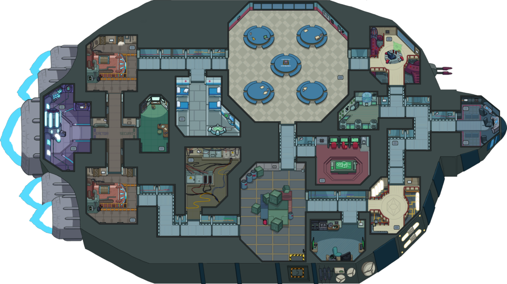
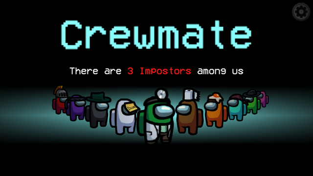
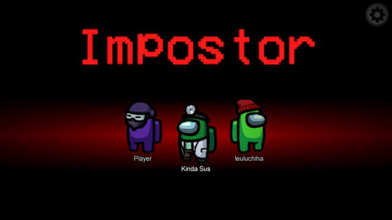

About
Among Us is an online multiplayer social deduction game developed and published by American game studio InnerSloth and released on June 15, 2018. The game takes place in a space-themed setting, in which players each take on one of two roles, most being Crewmates, and a predetermined number being Impostors.
Maps

The Skeld

Polus

Mira HQ
Game Mechanics
There are 2 teams in this game, The Crewmate and Impostor

Crewmate
- To control your character, it’s either keyboard and mouse or just mouse, while everyone’s speed can be adjusted by the host. What you choose is just personal preference.
- On phones, there is an analogue stick touch pad for moving.
- To do tasks, you need to walk to the correct room and either click the object directly or click the ‘Use’ button in the bottom right corner. From there, each task is fairly self explanatory.
- If you find a dead body, you can click ‘Report’ in the bottom right corner. This will call a team meeting, where you can discuss where you found the body, discover if anyone else was killed, and share your suspicions. You do not have to report a body if you see one, though.
- You can also call an emergency meeting from a button in the middle of the map.
- After the discussions, you vote. You can elect to skip a vote. If skipping has the most votes or there is a tie, nobody will be ejected.
- To win the game, you must complete all tasks before the Impostor kills the crew.
- Once you are killed, you can continue to complete tasks as a ghost to help your team, but you cannot communicate.

Impostor
- You will be given fake tasks by the game; pretend to do them to blend in.
- To kill someone, get close enough to them for the ‘Kill’ button in the bottom right hand corner to light up.
- There is a cooldown timer between kills, which can be customized by the host.
- You can either report the body yourself, or run away to take the suspicion off you.
- You can still participate in discussions and should try to throw suspicion off you.
- You can sabotage the ship, either by locking down certain rooms or by setting off faults.
- Some faults - such as turning off the lights - make it harder for crewmates to complete tasks, while others - such as turning off the oxygen - will kill them if they do not fix it in time.
- You can use the vents to get around the ship faster, but if anyone spots you, they will know you are an Impostor.
- To win the game, you need to kill off the crew.